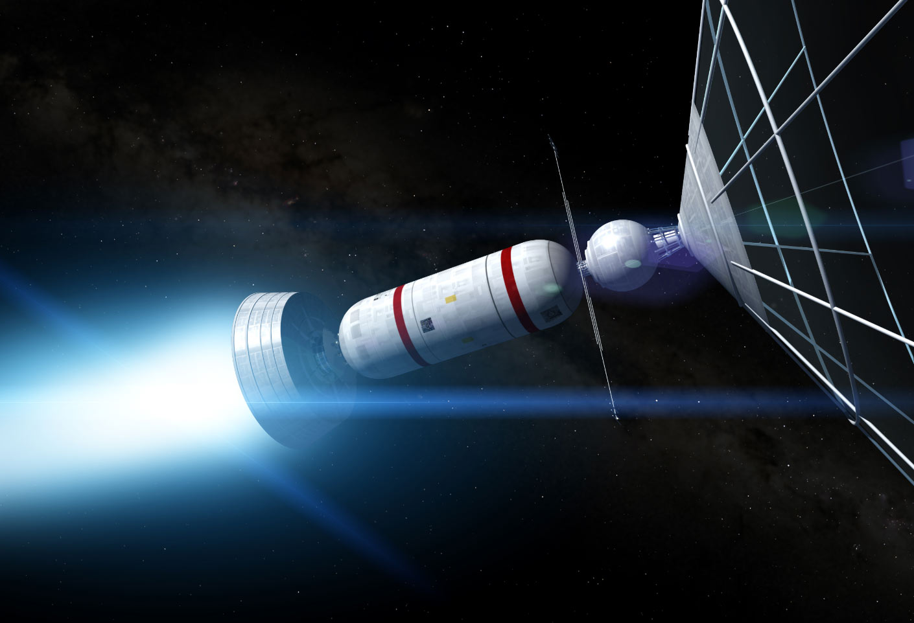

Interstellar Industries
Prototypes
Many concepts have already been developed into physical prototypes for testing. Certain technology such as ion propulsion has even been used on exploratory spacecraft.
Ion Thruster
Ion thrusters are currently being used on over 100 geosynchronous Earth orbit communication satellites. Ion propulsion was demonstrated by Deep Space 1 in 1998. Three ion thrusters have even been used on the exploratory spacecraft, Dawn; which began studying Vesta in 2011, and Ceres in 2015. More powerfull ion thrusters such as the X3 thruster are currently being developed. It has already broken many records during testing.
Solar Sail
Many prototypes have been created such as IKAROS and Lightsail-2. IKAROS is 196 square meters, about half the size of a basketball court. It launched in May of 2010. It has succesfully demonstrated that controlled acceleration through a solar sail is possible. Lightsail-2 launched on the 25th June, 2019 and increased its speed by a significant amount solely through its solar sail.